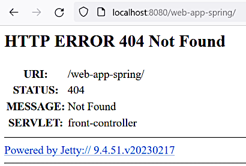
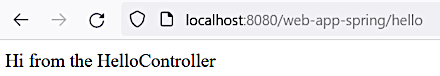

Spring web application setup
Spring web application setup
Spring web application setup
In this section Spring MVC is added to the basic web project created in the previous section.
[1.2]
Add dependency into the Maven POM:
. . .
<properties>
. . .
<org.springframework.version>5.3.9</org.springframework.version>
</properties>
. . .
<dependencies>
<dependency>
<groupId>org.springframework</groupId>
<artifactId>spring-webmvc</artifactId>
<version>${org.springframework.version}</version>
</dependency>
</dependencies>
. . .After mvn clean package and looking into the target/spring-mvc-study.war war file we can see
WEB-INF\lib\ directory contains files like: spring-core-5.3.9.jar, spring-web-5.3.9.jar,
spring-webmvc-5.3.9.jar and such other ones.
When running the Jetty server the following error occurs:
. . .
INFO: Initializing Servlet 'front-controller'
Mar 19, 2023 12:21:22 PM org.springframework.web.servlet.FrameworkServlet initServletBean
SEVERE: Context initialization failed
org.springframework.beans.factory.BeanDefinitionStoreException: IOException parsing XML document from ServletContext resource [/WEB-INF/front-controller-servlet.xml]; nested exception is java.io.FileNotFoundException: Could not open ServletContext resource [/WEB-INF/front-controller-servlet.xml]
. . .So need to add an empty /WEB-INF/front-controller-servlet.xml file (taken from the Spring IoC
XML configuration):
<?xml version="1.0" encoding="UTF-8"?>
<beans xmlns="http://www.springframework.org/schema/beans"
xmlns:xsi="http://www.w3.org/2001/XMLSchema-instance"
xsi:schemaLocation="http://www.springframework.org/schema/beans
https://www.springframework.org/schema/beans/spring-beans.xsd">
</beans>Now the dispatcher servlet is initialized successfully:
. . .
INFO: Initializing Servlet 'front-controller'
Mar 19, 2023 12:30:21 PM org.springframework.web.servlet.FrameworkServlet initServletBean
INFO: Completed initialization in 240 ms
. . .But if we open the URL http://localhost:8080/web-app-spring/ we will see an error 404 page:

That's because no endpoints were adjusted to response our requests. Need to add a controller. First need to activate component scan in our XML configuration:
<?xml version="1.0" encoding="UTF-8"?>
<beans xmlns="http://www.springframework.org/schema/beans"
xmlns:xsi="http://www.w3.org/2001/XMLSchema-instance"
xmlns:context="http://www.springframework.org/schema/context"
xsi:schemaLocation="http://www.springframework.org/schema/beans
https://www.springframework.org/schema/beans/spring-beans.xsd
http://www.springframework.org/schema/context
https://www.springframework.org/schema/context/spring-context.xsd">
<context:component-scan base-package="springmvcstudy.controllers" />
</beans>Tip
The base-package attribute may contain several packages separated by commas.
Adding a controller class springmvcstudy.controllers.HelloController:
@Controller
public class HelloController {
@RequestMapping("/hello")
@ResponseBody
public String sayHello() {
return "Hi from the " + this.getClass().getSimpleName();
}
}
The @ResponseBody annotation defines sending the return value directly as the response body.
We can write multiple controller classes and multiple handler methods inside a controller.
After rebuilding, running and navigating to http://localhost:8080/web-app-spring/hello, we can see our first "hello"!

The @RequestMapping and @ResponseBody annotations may be used on a controller class.
See the class ThingsController
as an example.
Git commit:
378558ccca90c31e96bf4335fccd489f2e429707simple spring web app run
[1.7]
In the file web.xml add the following parameters into the <servlet> section (in must follow
the <servlet-class> section):
<init-param>
<param-name>contextConfigLocation</param-name>
<param-value>/WEB-INF/front-controller-context.xml</param-value>
</init-param>Then the context configuration file must be renamed to front-controller-context.xml.
Git commit:
9fa1fac04edc8078f2e2e2435a313b816135a1f2change dispatcher servlet context configuration file nameThis commit was reverted right then as we don't need this renaming and it was done for demonstration only. Probably it's better to follow the convention over configuration (CoC) principle whenever it's possible.